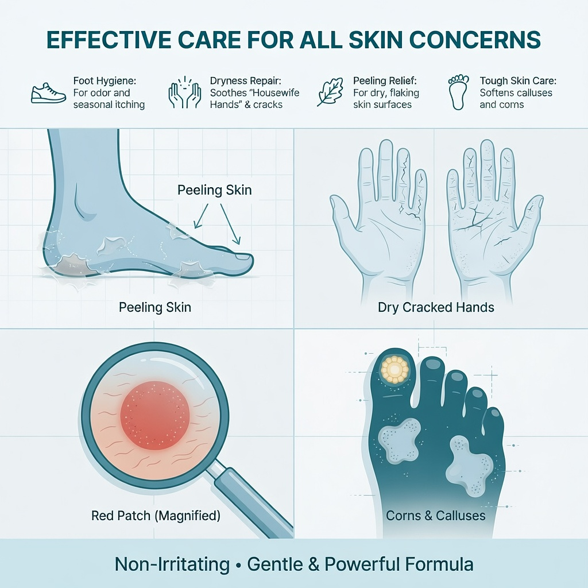
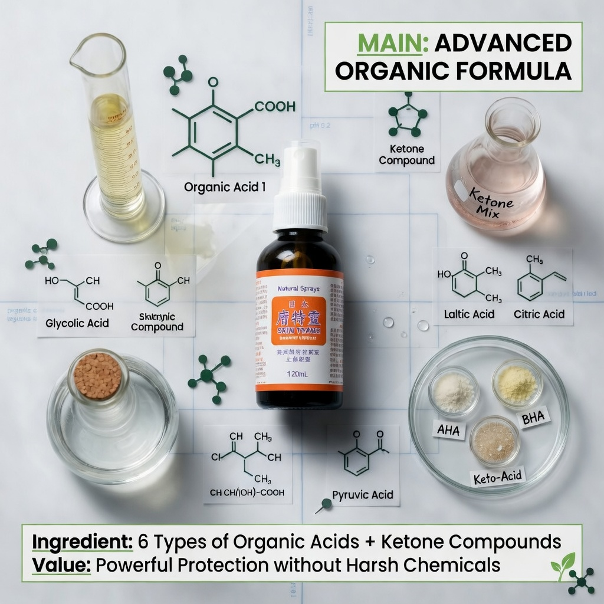
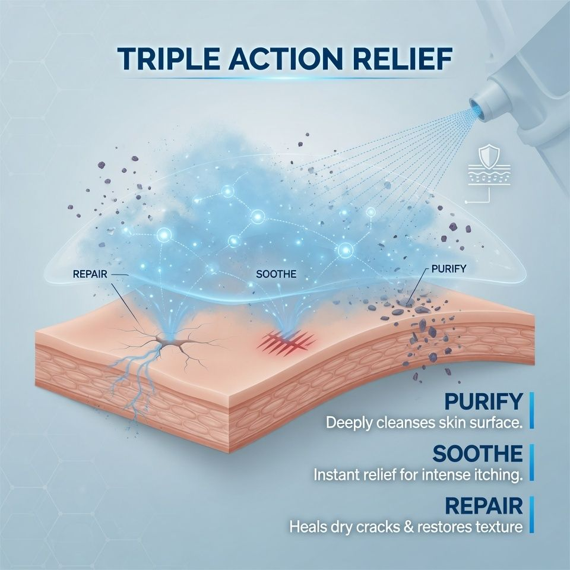
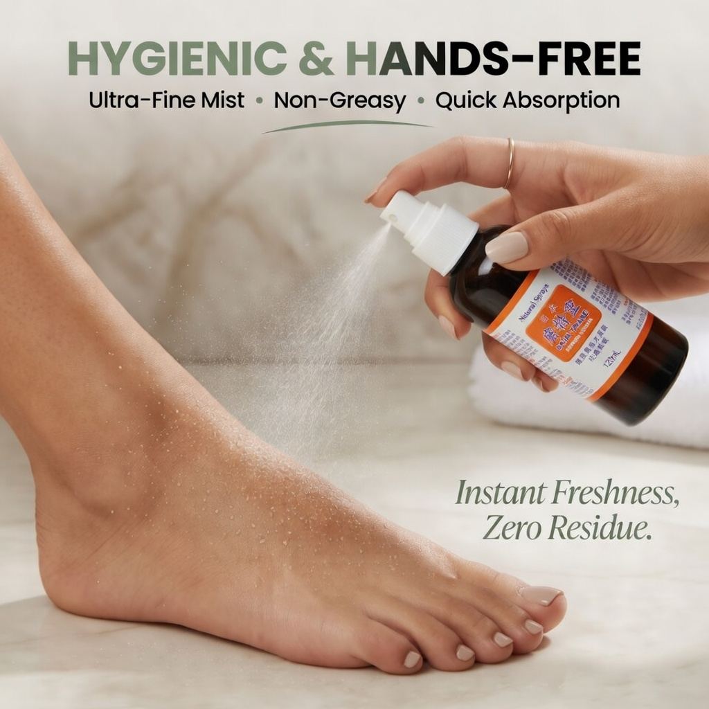
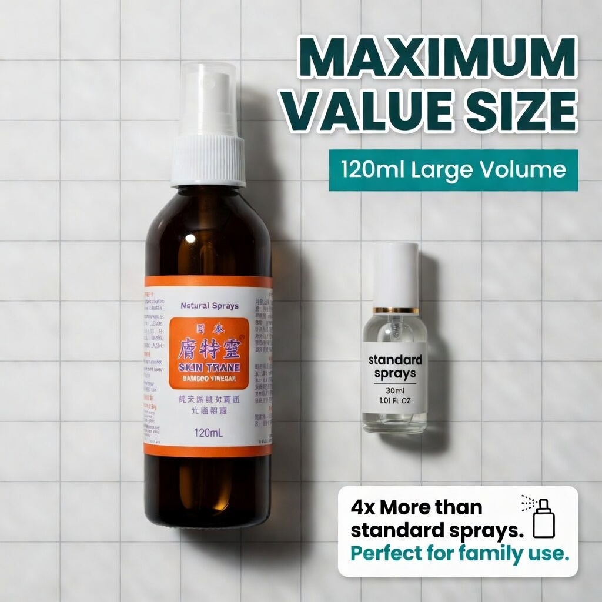

塔牌 · 外用
東京塔牌膚特靈 120ml×3乾肌救星！冷氣、換季乾燥脫屑——快速保濕修護，令皮膚回復水潤柔嫩。
可經 HKTVmall 或 WhatsApp 6222 7238 確認庫存與用法。視覺「購物車」按鈕會開啟 WhatsApp／HKTVmall，並非即時扣款結帳。
以下詳圖取自 HKTVmall 盈康店舖同一 SKU（H6838001_S_k0037），可直向滑動瀏覽。






東京塔牌膚特靈 120ml×3乾肌救星！冷氣、換季乾燥脫屑——快速保濕修護，令皮膚回復水潤柔嫩。
保濕修護・乾肌救星
相關搜尋關鍵字：東京塔牌膚特靈 120ml×3、東京塔牌膚特靈、東京塔牌膚特靈功效、東京塔牌膚特靈好處、東京塔牌膚特靈邊度買、痛點、功效、好處、膚特靈、滴膚堅、保濕噴霧、皮膚乾燥、修護、香港保濕、乾肌
久坐下背酸脹
長途駕駛腰腿疲
長輩關節僵硬感
運動後肌肉緊繃
針對紅腫、水泡及劇烈瘙癢，提供即時舒緩，告別反覆抓撓
深層滲透硬化角質，改善主婦手、腳跟乾裂，促進皮膚修復
120ml x 3支超值裝 ，噴灑覆蓋廣，自然乾透不黏膩，比藥膏更衛生
持續使用幫助去除老舊角質，淡化皮膚瑕疵，恢復平滑舒適
| 建議用法 | 清潔患處後適量噴塗或塗抹，避免接觸眼睛。 |
|---|---|
| 劑型 | 外用 |
| 保存 | 請置於陰涼乾爽處（約 25°C 以下），避免陽光直射，並放於兒童接觸不到的地方。 |
| 注意 | 孕婦、兒童及長期病患者請先諮詢專業意見。外用產品避免接觸眼睛與破損皮膚。 |
| 產品名稱 | 東京塔牌膚特靈 120ml×3 |
|---|---|
| 品牌 | 盈康 |
| 分類 | 塔牌 · 外用 |
| 售價 | HK$248 |
| 客服 | WhatsApp 6222 7238 |
尹淑梅中醫師（從醫五十多年・香港註冊中醫師）支持盈康「說明可查、日常可依」的輕養生理念。其榮譽包括香港中國醫藥研究院榮譽院長、香港中國醫藥學會永遠榮譽會長，並榮登《世界名人錄》及傑出英才錄。
推薦反映品牌理念認同。